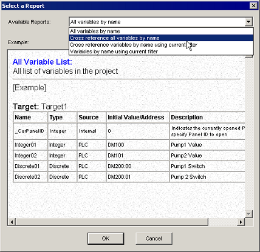
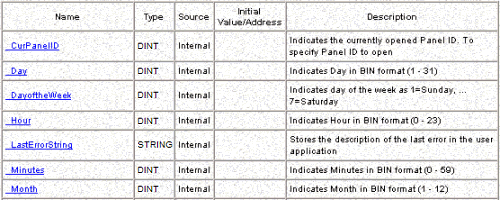
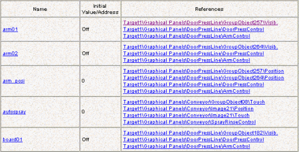

|
|
|
|
|
|
|
|
The cross-reference report function creates a detail list that shows where variables are being used, their data types, initial values, and so on.
There are four types of reports:
All variables by name
Cross reference all variables by name
Cross reference variables by name using current filter
Variables by name using current filter.
Open the Select a Report dialog box using one of the following methods:
In the Navigator window, right-click the Variables node, and select Variable Reference & Reports...
In the Variable Editor, click the Variable Report icon .
In the Select a Report dialog box, select the report you want to create:
All variables by name: All variables appear in the report and are organized alphabetically.
Cross reference all variables by name: Only variables that have cross references are displayed. Variables are organized alphabetically.
Cross reference variables by name using current filter: Only variables that have cross references are displayed. Variables are organized according to the current filter. To create or modify a filter, see Section 6.16, Filtering Variables.
Variables by name using current filter: Variables are displayed alphabetically, using the current filter in the project. To create or modify a filter, see Section 6.15, Filtering Variables.

Click OK. The report is displayed in the Information Viewer.
This is an example of All variables by name.

This is an example of Cross reference all variables by name.

You can use the Report function to create the same report. For more information, see Section 27.1, About Printing.